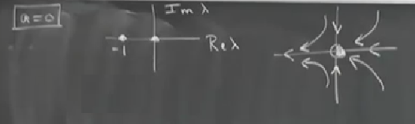
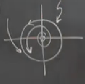

Kitabımın 8. bölümüne geldik, dersin doğal akışı içerisinde uygun sonraki konuya geçmiş olacağız aslında; şimdiye kadar yaptıklarımızı düşünelim, tek boyutlu sistemlerle başladık, bir çizgi üzerinde ne türlü dinamiğin ortaya çıkabileceğini inceledik, bu tek boyutta ortaya çıkabilecek çatallaşma tiplerine baktık. Sonra iki boyutlu sistemlere geçtik, tek boyutta gördüğümüz sabit noktalara ek olarak periyodik hareketleri temsil eden kapalı yörüngelerin ortaya çıkabildiğini gördük. Bazı egzotik konulara baktık, homoklinik yörünge gibi.. Neyse, artık çatallaşmaya tekrar bakma zamanı geldi, bu sefer iki boyutlu sistemlerde.
2D Sistemlerde Çatallaşma
Diyelim ki \(\exists\) stabil denge noktaları ya da kapalı yörüngeler [mevcut]. Bunlar zaten genelde ilgilendiğimiz iki oluş. Daha önce olduğu gibi merak ettiğimiz bir parametreyi değiştirirken bu iki oluşun ortadan nasıl, ne zaman yokolacağı / yokolmayacağı, stabilitesini nasıl değiştirdiği. Bugün protip örneklere bakacağız, bu örnekler “normal formlar’’ olarak geçen tipik bazı genel formlardır, bu kavram hakkında daha detaylı bilgiyi daha ileri seviye gayrı-lineer sistem dersler gösterir, biz çok detaylı olarak bu formları bizzat işlemeyeceğiz, fakat kabaca olarak şu anlama geliyorlar: eğer uygun şekilde kordinat sisteminde değişim yapılırsa bir sistemi bu normal formlara indirgeyebilirsiniz.
I. Sabit Noktaların Çatallaşması
Özdeğer \(\lambda = 0\) olduğu zaman, daha önce gördüğümüz gibi iki çeşidi vardır, eyer düğümü, transkritik ve tırmık. Bunları 1D’de gördük, fakat 2D için durum çok farklı değil, “eğer’’ kelimesi 2 boyutta daha anlamlı olacak ama, hakikaten atın üzerinde konan eğer gibi bir şekil görülebiliyor.
\(\lambda = \pm i\omega\), 2 boyutta farklı olan durum bu, kompleks eşlenik olan iki sayı elde edilebilir, ve bu sayılar tamamen pür sanal sayı (imaginary). Bu durumda Hopf çatallaşması ortaya çıkıyor, isim onu yakından inceleyen bilim adamı Hopf’dan geliyor, gerçi bu kavrama ilk bakan o değildi, Poincare de bu çatallaşma ile karşılaşmıştı. Bu kavram bizim için, dersin bu noktasında, niceliksel olarak tamamen yeni bir kavram.
Bu arada daha fazla ilerlemeden kendimize soralım: niye sabit nokta özdeğerler ile bu kadar çok ilgileniyoruz? Sebep eğer her elimizdeki iki özdeğerin (iki tane çünkü iki boyutlu sistemdeyiz) reel kısmi negatif ise, sabit nokta yerel olarak stabil olur, yani lineer olarak stabildir. Özdeğerin reel kısımları çözümlerin bir sabit nokta yakınında üstel çürüme oranını (decay rate) temsil ederler.
Bir parametreyi değiştirdikçe özdeğerlerin kompleks uzayda nerede olduğunu gösteren bir grafik çizmek faydalı olabilir, bu grafikte Im \(\lambda\) özdeğerin kompleks, Re \(\lambda\) onun reel kısmı olsun. İki türlü durum ortaya çıkabilir, biri her iki değer negatif ve reel. Bir diğeri her iki özdeğer birbirinin kompleks eşleniği, çünkü reel vektör alanı olan problemleri inceliyoruz, bu sebeple özdeğerlerin karakteristik denklemlerinin reel katsayıları olacak, bu denklem karesel olacak (iki boyutlu bir sistemdeyiz), bu yüzden özdeğerler her zaman birbirinin kompleks eşleniği olmalı (ya da her ikisi reel).
Her iki alternatif üstteki iki grafikte görülüyor. Şimdi üstte sağdaki noktaların nasıl grafiğin \(y\) ekseninin sağ tarafına geçireceğimizi düşünmemiz lazım, ki bu bölgede \(\lambda\)’nin reel kısmi pozitif. Bir çatallaşmayı ortaya çıkartacak olan bu. Özdeğerler \(Re \Lambda \ge 0\) bölgesine geçtiğinde çatallaşma ortaya çıkacak.
Bunun detayına girmeden önce daha neler ortaya çıkacağını şimdiden söyleyeyim, periyotsal, kapalı yörüngelerden ortaya çıkan çatallaşmalar da vardır. Aslında bunlardan birini işledik, Hopf çatallaşması.
Çevrimlerin biraraya gelmesi: bu durum eyer düğümü çatallaşmasına benziyor, hatırlarsak o durumda bir stabil bir gayrı-stabil sabit nokta çarpışarak birbirini yokediyordu. Benzer bir durum çevrimlerde de ortaya çıkabilir. Mesela bir stabil çevrim içinde gayrı-stabil bir çevrim vardır, bir parametre değiştikçe birbirlerine yaklaşırlar, sonra birleşirler, ve bir süre sonra yokolurlar. Bu duruma çevrimlerin eyer düğüm çatallaşması ismi veriliyor.
Eyer düğüm sonsuz periyot çatallaşması (saddle-node infinite period bifurcation, SNIPER, ya da SNIC). Bu durumda değişmeyen çember üzerinde eğer düğümü var. İlginç bir durum bu, bir kapalı yörünge var mesela [alttaki grafikte en solda], bir parametre değiştikçe çember üzerinde bir acaip bir yarı stabil sabit nokta ortaya çıkıyor, sanki tek boyutlu bir sistemdeymişiz gibi, sonra bu nokta bir eğer ve düğüme ayrılıyor, ve tüm akış sabit olan noktaya doğru gidiyor tabii [altta ortada]. Sonra bu noktalar yaklaşıp birbirlerini yokedebiliyorlar, ve geriye sadece bir çevrim kalıyor, o çevrim üzerinde hala akış var tabii [altta sağda].
Çevrim içinde de birşeyler olabilir tabii, bundan bahsetmedik ama, mesela çevrim ortasından çıkan bir akış çembere doğru gidebilir, ya da dışarıdan çembere doğru. Neyse bunun detaylarına sonra gireceğiz.

Üstte en sağdaki çevrim sonsuz periyor, niye böyle dedim, çünkü bir tür ardından ve tam sabit nokta doğmadan önce işler çok yavaşlıyor olacak.
Örnekler
I a) \(\lambda=0\) çatallaşmaları
\[\dot{x} = a - x^2\]
\[\dot{y} = -y \]
\(x,y\) birbirlerinden ayrılmış halde, iki ayrı tek boyutlu sistem var, herkes kafasına göre takılıyor. \(y\) yönünde hiç ilginç bir hareket yok, herşey \(y=0\)’ya doğru sönüyor, aynı anda \(x\) eksenine doğru itilme var ki tüm ilginç şeyler burada oluyor.
Sabit noktalar
\(a>0\) iken \((\sqrt{a},0)\), \((-\sqrt{a},0)\). \(a\) sıfıra yaklaşırken bu iki sabit nokta birbirine yaklaşır, ve \(a=0\)’da birbiriyle birleşip negatif \(a\)’da yokeder. Sabit noktalarda Jacobian’a bakarsak,
\[ A = \left[\begin{array}{rrr} \frac{\partial \dot{x}}{\partial x} & \frac{\partial \dot{x}}{\partial y} \\ \frac{\partial \dot{y}}{\partial x} & \frac{\partial \dot{y}}{\partial y} \end{array}\right] = \left[\begin{array}{rrr} -2x^\ast & 0 \\ 0 & -1 \end{array}\right] \]
O zaman \(\lambda_1 = -2x^\ast\), \(\lambda_2 = -1\) olur.
Dikkat edelim ki stabil düğüme tekabül eden durum \(\lambda_1\)’in negatif olduğu durum; çünkü \(\lambda_2\) grafiğin sol yarısında, zaten negatif. Ama \(x\) pozitif bir sayı ise, mesela \(x^\ast = \sqrt{a}\), \(y^\ast=0\) bu bir stabil düğüm, \(x^\ast = -\sqrt{a}\) ise o zaman bir eğer var. Eyer düğüm çatallaşmasından bahsediyorduk, nihayet ortaya çıktı. Hatırlarsak iki boyutta birbiriyle çarpışan iki şey bir düğüm ve eğer.
Şimdi özdeğer resmine, yani spektruma bakarsak,

Parametreyi değiştirdikçe özdeğer sağa doğru gidecek, \(-2\sqrt{a}\) kritik yer, onun ardından hızla sıfıra gelinir, ve sıfırda çatallaşma ortaya çıkar. Tabii “gelmek’’ derken bu bir faz portresi değil, parametre değiştikçe özdeğerdeki değişimlerden bahsediyorum.
Faz portresi
Çizgiler üzerindeki akış üstel bir sönüm, sabit noktalara doğru çürüme var. Resmi tamamlarsak,

\(a\) pozitif \(x=0\) iken \(\dot{x}\) pozitif, sağa doğru gidiş var [üst orta kısım], \(x\) ekseni değişmez (invariant), vs.
Şimdi tek boyutlu sistemlerde niye bu kadar zaman harcadığımızı da anlayabiliyoruz, çatallaşma teorisiyle uğraşırken görürsünüz ki tek bir boyut üzerinde çok ilginç dinamikler görülebiliyor, ve bu dinamik tüm diğerlerine baskın çıkıyor, üstteki örnekte bu \(x\) ekseni. Diğer boyutlarda can sıkıcı kapanma / inme (collapse) olayları var, yani uzun vadede sistemin nereye gideceğini tek boyutlu bir manifold karar veriyor ki bu da \(x\) ekseni. Fakat genel olarak diğer problemlerde göreceğiz dalgalı inip çıkan tek boyutlu bir manifold olabilir, ve bir stabil ve gayrı stabil sabit nokta birbirlerine bu manifold üzerinde yaklaşır ve çarpışırlar. Üstteki şekil bize daha çetrefil durumlarda olanların temsili bir resmini veriyor.
Devam edelim, \(a=0\)’da üstteki iki nokta biraraya gelip birleşir (bu arada üstteki iki resim \(a>0\) durumu), onu da görelim,

-1’de çatallaşma ortaya çıkıyor.. Bu resim iki üstteki sağdaki resimde soldaki iki dik eksenin birleşmiş hali sanki.. Bir de sabit noktayı yarı-stabil gösterdim, öyle mi acaba? Nokta \(y\) ekseninin sağ tarafını kendine çekiyor, sol tarafını itiyor.. diğer yandan \(y\) ekseni üzerinde de bir çekim var, ittiğinden çok kendine çekiyor.. Dörtte üç stabil mi desek acaba? Öyle bir şey yok tabii, o yüzden yarı-stabil diyoruz, ama illa doğru kelimelendirmek istesek kısmen stabil kısmen gayrı-stabil demek lazım.
\(a<0\) icin sabit nokta hic yok, bu sebeple sabit noktada \(\lambda\)’lar uzerinden spektrum grafigini cizmek mumkun degil, cunku hic sabit nokta yok. Onun yerine faz duzleminde biraz kafa karistirici alttaki goruntu olusur,
Ortada bir “yavaş’’ bölge var, bu bölge illa tam yuvarlak, elips olmayabilecek bir parça. Bu bölgeye giren gidiş yolları aşırı yavaşlıyorlar, çünkü vektör alanındaki vektörlerin boyu çok küçük. Bu bölge iki üstteki sabit nokta yokolduktan sonra arta kalan bir”hayalet’’ olarak tarif edilir. Neyse gidiş yolları oraya girerler, çıkınca tekrar hızlanırlar. Bu tür dinamik sistemleri bazen görürsünüz. Bu yavaşlama bölgesine bazen “darboğaz’’ ismi de veriliyor. Neyse tarif ettiklerimiz iki boyutta eyer düğümü için tipik bir durum.
Bu örneği size bırakıyorum, analizini yapmak oldukca kolay, sistem şöyle,
\[ \dot{x} = ax-x^2 \]
\[ \dot{y} = -y \]
Hatırlarsak tırmık durumunda iki örnek vardı, altkritik (subcritical) ve süperkritik (supercritical), bu ayrılık hakkında biraz konuşacağız, hatta bu ayrılık Hopf çatallaşması durumunda da ortaya çıkıyor, sonraki derste bunları göreceğiz. Bu arada sonraki dersi kaçırmayın çünkü bazı filmler göstereceğim, filmlerde şimdiye kadar bahsettiğimiz pek çok çatallaşmayı gerçek dünyadaki örneklerini göreceğiz.
Neyse, tırmığın süperkritik haline bakalım, \(a<0\) durumu,
\[ \dot{X} = ax-x^3 \]
\[ \dot{y} = -y \]
Spektruma bakacağız, sabit noktalar \(\underline{x}^\ast = (\pm \sqrt{a}, 0)\), bir tane de orijinde var. Tabii \(a<0\) olunca sadece orijindeki sabit nokta geçerli, yani
Özdeğerler

Jacobian
\[ A = \left[\begin{array}{rrr} a & 0 \\ 0 & -1 \end{array}\right] \]
\(a\)’yi değiştirdikçe soldan sıfıra doğru yaklaşacak, tam sıfıra geldiğinde başta gösterdiğimiz ilk iki sabit nokta doğacak demektir. \(a=0\) anında şekil
üstteki gibi. Gidiş yolları sıfıra çok yavaş gidiyorlar, çünkü \(a=0\) olduğu için elde kalan \(\dot{x} = -x^3\) ve bu ifadenin çürümesi bilindiği gibi çok yavaştır. Fizikçiler bu yavaşlamaya “kritik yavaşlama (critical slowing down)’’ ismini veriyorlar. Bu deneylerde, ikinci derece faz geçilerinde görülebilecek bir şey, hakikaten ortaya çıkıyor.
\(\lambda\) düzlemine bakarsak,

Ve \(a>0\) durumunda faz portresi
Orijin bir eğer haline gelir,

Bu süperkritik tırmık. Tek sabit noktadan üstteki resimde sağdaki ve soldaki iki nokta ortaya çıktı. Süperkritik çünkü yeni yaratılan sabit noktalar stabil.
Şimdi Hopf çatallaşmasına biraz girelim, gerisini sonraki derste işleyeceğiz.
Hopf durumu, \(\lambda = \pm i\omega\). \(\omega\) sembolünü özellikle kullandım çünkü bildiğimiz gibi bu sembol frekans için kullanılır ve burada hakikaten hayali sayı olarak bir frekanstan bahsediyoruz, doğum anında limit çevriminin frekansı bu olacak. Buna eşit bir durum, özdeğerin hayali olmadığı halde, merkez örneğini düşünelim, hatırlarsak merkez olup olmadığınan emin olamıyorduk, burada lineer bir merkez var mı? sorusu Hopf çatallaşması ile alakalı, orada \(\tau = 0\), \(\Delta > 0\).
Ya da glikoliz örneğini hatırlarsak, Poincare-Bendikson teorisi ile uğraşıyorduk, hani garip bir tuzak bölge yaratmaya uğraşıyorduk, şuna benziyordu,

sonra ortadaki noktanın sabit olup olmadığını kendimize sorduk. İşte o nokta aslında bir Hopf çatallaşması yaşıyordu, o zaman bunu bilmiyorduk tabii.
Şimdi süperkritik Hopf örneği görelim, sonraki derste altkritik örneğini görürüz.
Süperkritik durumda bir stabil sarmal çatallaşmanın bir tarafında yaşar, bir parametreyi değiştirdikçe çatallaşmaya gireriz, ve gayrı-stabil sarmala dönüşüm olur. Fakat gayrı-stabil sarmal tek başına değil artık, etrafında ufak genlikli, stabil bir limit çevrimi var, ve bu çevrimin şekli her zaman eliptiktir, en azından doğum anı yakınında. Genel şartlar altında bu hakikat bir limit çevrimi olur, “kapalı yörünge’’ demiyorum dikkat ederseniz, bu çevrim tamamen izole olacaktır. Hopf Teorinsi denen bir teori var, ve limit çevrimlerinin varlığını garanti eden şartları belirliyor, bu durumda stabil. Altkritik durumda gayrı-stabil olurdu.
Ornek gorelim, Hopf durumunda \(\lambda_1,\lambda_ \pm i\omega\) demistik.
\[ \dot{r} = ar - r^3 \]
\[ \dot{\theta} = \omega + br^2 \]
Normal formların teorisini kullanarak Hopf çatallaşması yakınında dinamiğin üstteki gibi olduğunu ispat edebiliyorsunuz. Dönüşün frekansında bir sabit terim oluyor, üstte \(\omega\), ama bir genliğe de bağlantı oluyor \(br^2\) terimi.
Sistemimiz böyle. Dikkat edersek aşağı yukarı ayrışmış (decoupled) halde, \(\dot{r}\) sadece \(r\)’ye bağlı. Gerçi \(\dot{\theta}\) hala \(r\)’ye bağlı, ama hala yarıçapsal yönde tek boyutlu bir sistemimiz var, ve \(\theta\) bazında \(r\) tarafından “sürülen’’ bir başka sistemimiz.
Tek boyutlu sistem için \(r=0\) tek boyutlu dinamiğin sabit noktasını verir, ama \(a \le 0\) ise stabildir. Gerçi \(a=0\) için de stabildir, daha önce bahsettiğimiz zayıf, kritik yavaşlama bağlamında, ama \(a<0\) için üstel stabildir, \(a>0\) için gayrı-stabildir. Çatallaşma \(a=0\)’da ortaya çıkar.
Dikkat edersek \(a>0\) ve tek boyut durumunda \(\dot{r} = r(a-r^2)\) ayrıştırması da yapılabilir, ve bu bize \(r = \sqrt{a}\) stabil sabit noktasını verirdi, fakat biz tek boyutta değiliz, iki boyuttayız, o zaman o sabit nokta \(\sqrt{a}\) çaplı bir çembere tekabül ediyor. Bu çember \(a\) sıfıra yakın ama pozitif olduğu durumdaki limit çevrimidir. Diyelim ki \(\omega,b\) pozitif, şekil suna benzer,

Yani \(a>0\) olduğunda bir gayrı-stabil sarmal ortaya çıkar.
Sarmalin genligine dikkat, \(\sqrt{a}\). O zaman \(a\) kucuk oldugu durumda genlik kucuk olacaktir, yani dogum aninda bu limit cevrimi sifir genlikli bir cevrimdir.
Bu arada üstteki örnek için özdeğerleri bulmanın en kolay yolu Kartezyen kordinatına geçmek, \(x=r\cos\theta\), vs diyerek, kutupsal kordinatta Jacobian hesabı yapmakla uğraşmayın, çok karışık olur.
\(a<0\) icin resim,

\(a\)’yı değiştirdikçe özdeğerler noktalı çizgi üzerinde sağa hareket edecekler.
\(a=0\)’da özdeğerler pür hayali. Faz düzleminde \(\dot{r}=-r^3\) olurdu, yani çok yavaş bir çürüme var,
Çizim dış çeperde bir çember olmaya uğraşan ama bir türlü başaramayan bir gidişat gösterir, acaip bir tür sarmaldir, bu çizimi bilgisayarda yapmanızı tavsiye ederim, çizimin nasıl gittiğini de görmüş olursunuz böylece bu gidişatı başka yerde görünce hemen tanırsınız. Çizim orta kısmi kapkara hale getirecek, işte Hopf çatallaşmasının sonucu bu, sıfıra doğru çürüyüşü o kadar yavaş ki giderken yoldaki tüm pikselleri boyamış oluyor, ve kapkara bir yüzey ortaya çıkartıyor.
Bu arada, \(a=0\) durumunda lineer teori bir merkez tahmin ederdi, fakat bu yanlış olurdu, elimizde bir sarmal var.
Ödev
Alttaki sorular için faz portresini bir kontrol parametresi \(\mu\)’ya bağlı olarak çizin. \(\mu\) değiştikçe ortaya çıkan çatallaşmaları sınıflayın, ve \(\mu\)’nun tüm çatallaşma değerlerini bulun.
Soru 4.3.3
\[ \dot{\theta} = \mu \sin\theta - \sin 2\theta\]
Cevap
Bu sistemin sabit noktalarını bulmak için çift açı formülünü kullanarak \(\dot{\theta} = 0\) yapıp çözeriz. Ya \(\sin \theta = 0\) ki bu \(\theta^\ast = 0\) ya da \(\pi\) demektir, ya da \(\sin\theta\) ile bölebiliriz, ki bu durumda \(\mu/2 = \cos\theta^\ast\). \(\mu\)’nun farklı değerlerine göre farklı sayıda sabit nokta elde edeceğimiz şimdi görülüyor olmalı. Altta \(\dot{\theta}\)’nin \(\mu\) ve \(\theta\)’nin fonksiyonu olarak üç boyutlu grafiği görülebilir.
Tüm bunlardan \(\dot{\theta}=0\) düzlemi ile kesişmesini düşünerek bir çatallaşma diagramı çıkartabiliriz. Bu kesişmenin ortaya çıkardığı eğriler çatallaşma diagramının şekli olacaktır, ve çatallaşma eğrisinin her iki tarafında \(\dot{\theta}\)’nin işaretine bakarak stabilite hakkında bilgi edinebiliriz. Tüm bunları kullanarak alttaki diagramı elde ederiz,

Görüldüğü gibi kritik değer \(\mu_c= \pm 2\)’de bir tırmık çatallaşması var. Bu kritik değerleri \(\mu/2 = \cos\theta^\ast\) denkleminin tek olan / yanlız çözümlerinin ilk bu noktada ortaya çıktığını ve sonra yokolduğunu görerek te elde edebilirdik, yani geçici / ara değerler için iki tane çözüm olduğunu ama aralık dışındaki \(\mu\) değerleri için hiç çözüm olmadığını görerek. Bunları kullanarak \(\mu\) değiştikçe ortaya çıkan çizdiğimiz grafikler alttadır. Grafikler \(\mu\) -2 altından 2 üstüne çıktıkça ortaya çıkan vektör alanlarıdır.
Soru 4.5.1
Ateş böceği modelinde böceğin cevap fonksiyonu olan sinüssel form biraz rasgele şekilde seçilmişti. Şu alternatif modeli düşünelim, \(\dot{\Theta} = \Omega\), \(\dot{\theta} = \omega + A f(\Theta-\theta)\) ki \(f\) şimdi bir üçgen dalga fonksiyonu olsun (triangle wave). Spesifik olarak \(-\frac{\pi}{2} \le \phi \le \frac{3}{2}\pi\) aralığında
\[ f(\phi) = \left\{ \begin{array}{ll} \phi, & -\frac{\pi}{2} \le \phi \le \frac{\pi}{2} \\ \pi-\phi, & \frac{\pi}{2} \le \phi \le \frac{3}{2}\pi \end{array} \right. \]
olsun, ve \(f\)’i periyotsal olarak bu aralığın dışına çıkartalım. Şimdi
\(f(\phi)\)’i grafikleyin.
Etkilenme bölgesini bulun
Böceğin etkileyene fazsal kitlenmiş olduğunu farzederek faz farkı \(\phi^\ast\) için formülü bulun.
\(T_{kayış}\) formülünü bulun.
Cevap
Etkilenme bölgesinde ateş böceği senkronize olabiliyor (frekansını uyumlayabiliyor). Bu \(\dot{\phi} = \dot{\Theta} - \dot{\theta}\) sıfır anlamına gelir, ve
\[ \dot{\phi} = \dot{\Theta} - \dot{\theta} = 0 = \Omega - \omega - A f(\Theta-\theta) \iff \Omega = \omega + A f(\Theta-\theta) \]
\(f(\theta)\) \(-\frac{\pi}{2}\) ile \(\frac{\pi}{2}\) arasında olabildiğine göre uyumlanma bölgesi \(\omega - A \frac{\pi}{2} \le \Omega \le w + A \frac{\pi}{2}\).
Fazın kitlenmiş olması \(\dot{\phi} = \Omega - \omega - A f(\phi^\ast) = 0\) demek, bunun sonucu \(f(\phi^\ast) = \frac{\Omega - \omega}{A}\). Üstten görüldüğü üzere \(|f(\phi^\ast)| < \frac{\pi}{2}\).
\(T_{kayış}\) için entegrasyon formülünü kullanıp içine \(f(\phi)\) sokarsak ve entegrali pürüzsüz bölgeleri üzerinden parçalara ayırırsak,
\[ T_{kayış} = \int_{0}^{2\pi} \frac{\mathrm{d} t}{\mathrm{d} \phi} \mathrm{d} \phi = \int_{0}^{2\pi} \frac{1}{\Omega - \omega - Af(\phi)} \mathrm{d} \phi \]
\[ = \frac{1}{A} \int_{-\frac{\pi}{2}}^{\frac{\pi}{2}} \frac{1}{\frac{\Omega-\omega}{A}} \mathrm{d} \phi + \frac{1}{A} \int_{\frac{\pi}{2}}^{\frac{3}{2}\pi} \frac{1}{\frac{\Omega-\omega}{A}-\pi+\phi}\mathrm{d}\phi = \frac{2}{A} \ln \bigg( \frac {\frac{\Omega-\omega}{A} + \frac{\pi}{2}} {\frac{\Omega-\omega}{A} - \frac{\pi}{2}} \bigg) \]
Soru 5.1.9
\(\dot{x} = -y, \dot{y} = -x\) sistemini alalım.
Sistemin vektör alanını taslaksal olarak çizin.
Gidiş yollarının \(x^2+y^2=C\) formunda hiperboller olduğunu gösterin (tiyo: ana denklemlerin \(x\dot{x}-y\dot{y}=0\) demek olacağını gösterin, sonra her iki tarafı entegre edin).
Orijin bir eğer noktası, onun stabil ve gayrı-stabil manifoldlarının formüllerini bulun.
Sistemin iki kısmı arasında bağlantıları kesmek ve çözmek şöyle mümkün. Yeni değişkenler \(u,v\)’i kullanın, ki \(u=x+y\), \(v=x-y\). Sonra sistemi bu iki yeni değişken bazında tekrar yazın. Şimdi \((u_0,v_0)\) başlangıç durumu için \(u(t),v(t)\) çözümünü bulun.
Stabil ve gayrı stabil manifoldun \(u,v\) bazındaki hali nedir?
Cevap
\[ \frac{\dot{y}}{\dot{x}} = \frac{-x}{-y} = \frac{\mathrm{d} y}{\mathrm{d} x} \]
ile bulunabilir.
\[ \Rightarrow y\mathrm{d} y = x \mathrm{d} x \Rightarrow y^2 - x^2 = sabit\]
Orijinde \(J_{0,0} = \left[\begin{array}{rr} 0 & -1 \\ -1 & 0 \end{array}\right]\)
\[ \Rightarrow \lambda^2 - 1 = 0 \Rightarrow \lambda = \pm 1 \]
Özvektörler,
\[ \lambda_1=1, \quad \underline{v}_1 = \left[\begin{array}{cc}1&-1\end{array}\right]^T \]
\[ \lambda_2=-1, \quad \underline{v}_2 = \left[\begin{array}{cc}1&1\end{array}\right]^T \]
\[ \dot{u} = -u \Rightarrow u(t) = u_0 e^{-t} \]
\[ \dot{v} = v \Rightarrow v(t) = v_0 e^{t} \]
\(u,v\) kordinat sisteminde \(\left[\begin{array}{cc}1&0\end{array}\right]^T\) ve \(\left[\begin{array}{cc}0&1\end{array}\right]^T\) stabil ve gayrı-stabil manifoldlar.
\[ x(t) = \frac{u+v}{2} = \frac{u_0 e^{-t} + v_o e^{t}}{2} \]
\[ = \frac{x_0+y_0}{2} e^{-t} + \frac{x_0-y_0}{2} e^{t} \]
\[ y(t) = \frac{u-v}{2} = \frac{u_0 e^{-t}}{2} - \frac{v_0}{2} e^{t} \]
\[ = \frac{x_0+y_0}{2} e^{-t} - \frac{x_0-y_0}{2} e^{t} \]
O zaman gidiş yolları alttaki gibi olur,

Soru 6.1.5
Alttaki sistem için sabit noktaları bulun. Ardından durağan eğrileri (nullclines), vektör alanını, ve akla yatkın bir faz portresini taslaksal olarak çizin.
\[ \dot{x} = x(x-y), \quad \dot{y} = y(2x-y) \]
Cevap

\(x\) durağan eğrisi: \(x=0\) ya da \(2-x-y=0\)’da.
\(y\) durağan eğrisi \(x-y=0\)’da.
Sabit noktalar (0,0) ve (1,1).
\[ J = \left[\begin{array}{rr} 2-2x-y & -x \\ 1 & -1 \end{array}\right] \]
\[ J_{0,0} = \left[\begin{array}{rr} 2 & 0 \\ 1 & -1 \end{array}\right] \]
Bu bir eğerdir.
\[ J_{1,1} = \left[\begin{array}{rr} -1 & -1 \\ 1 & -1 \end{array}\right] \]
Bu bir stabil sarmaldır.